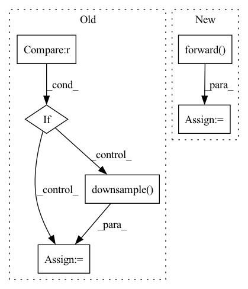

Pattern ID :939
Before Change
out = self.conv2(out)
out = self.bn2(out)
if self.downsample is not None :
residual = self.downsample( x)
if not self.cbam is None:
out = self.cbam(out)
After Change
def forward(self, x):
x = self.conv_1_3x3.forward(x)
x = F.relu(self.bn_1.forward( x) , inplace=True)
x = self.stage_1.forward(x)
x = self.stage_2.forward(x)
x = self.stage_3.forward(x)
x = F.avg_pool2d(x, 8, 1)
x = x.view(-1, self.stages[3])
return self.fc(x)
In pattern: SUPERPATTERN
Frequency: 3
Non-data size: 6
Instances Fragment ID: 3446614
Project Name: pprp/pytorch-cifar-tricks
Commit Name: a5bde002e28a524ddfc6bb60b7cf244daf0ca392
Time: 2021-12-22
Author: 1115957667@qq.com
File Name: model/att_overfit/att_net.py
M Class Name: BasicBlock
N Class Name: CBAMResNeXt
M Method Name: forward(2)
N Method Name: forward(2)
M Parent Class: nn.Module
N Parent Class: nn.Module
M File Name: model/att_overfit/att_net.py
N File Name: model/att_overfit/att_net.py
M Start Line: 39
M End Line: 57
N Start Line: 200
N End Line: 207
Before Change
out = self.conv2(out)
out = self.bn2(out)
if self.downsample is not None :
identity = self.downsample( x)
out += identity
out = self.relu(out)
After Change
def forward(self, x):
x = self.conv_1_3x3.forward(x)
x = self.act(self.bn_1.forward( x) )
x = self.stage_1.forward(x)
x = self.stage_2.forward(x)
x = self.stage_3.forward(x)
x = F.adaptive_avg_pool2d(x, 1)
x = x.view(-1, self.stages[3])
return self.classifier(x) Fragment ID: 3446624
Project Name: ygzwqzd/lamda-ssl
Commit Name: 360768e49da2ff10157493a976817acc85f1ccd5
Time: 2022-01-17
Author: 1129198222@qq.com
File Name: Semi_sklearn/Network/ResNet.py
M Class Name: BasicBlock
N Class Name: CifarResNeXt
M Method Name: forward(2)
N Method Name: forward(2)
M Parent Class: nn.Module
N Parent Class: nn.Module
M File Name: Semi_sklearn/Network/ResNet.py
N File Name: Semi_sklearn/Network/ResNet.py
M Start Line: 47
M End Line: 63
N Start Line: 155
N End Line: 164
Before Change
out = self.conv3(out)
out = self.bn3(out)
if self.downsample is not None :
residual = self.downsample( x)
if not self.cbam is None:
out = self.cbam(out)
After Change
out = self.conv_expand.forward(out)
out = self.bn_expand.forward(out)
residual = self.shortcut.forward( x)
if self.cbam_module is not None:
out = self.cbam_module(out) + residual
else: Fragment ID: 3446617
Project Name: pprp/pytorch-cifar-tricks
Commit Name: a5bde002e28a524ddfc6bb60b7cf244daf0ca392
Time: 2021-12-22
Author: 1115957667@qq.com
File Name: model/att_overfit/att_net.py
M Class Name: Bottleneck
N Class Name: Bottleneck
M Method Name: forward(2)
N Method Name: forward(2)
M Parent Class: nn.Module
N Parent Class: nn.Module
M File Name: model/att_overfit/att_net.py
N File Name: model/att_overfit/att_net.py
M Start Line: 83
M End Line: 102
N Start Line: 112
N End Line: 125